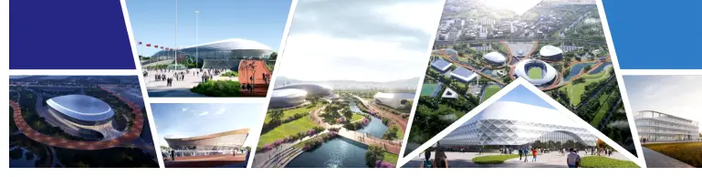

AQUATIC PALACE
Baku 2015 Aquatics palace
Дворец водных видов спорта расположен в новой части Бакинского бульвара и имеет общую площадь 72000 квадратных метров. Отвечает полностью требованиям Международной Федерации Плавания. В июне 2015 года во дворце прошли соревнования по плаванию, синхронному плаванию и прыжкам в воду в рамках I Европейских игр
Baku 2015 Aquatics palace
Отвечает полностью требованиям Международной Федерации Плавания. В июне 2015 года во дворце прошли соревнования по плаванию, синхронному плаванию и прыжкам в воду в рамках I Европейских игр
TASHKENT 2025 Aquatics palace
ПРОЕКТ В РАЗРАБОТКЕ
